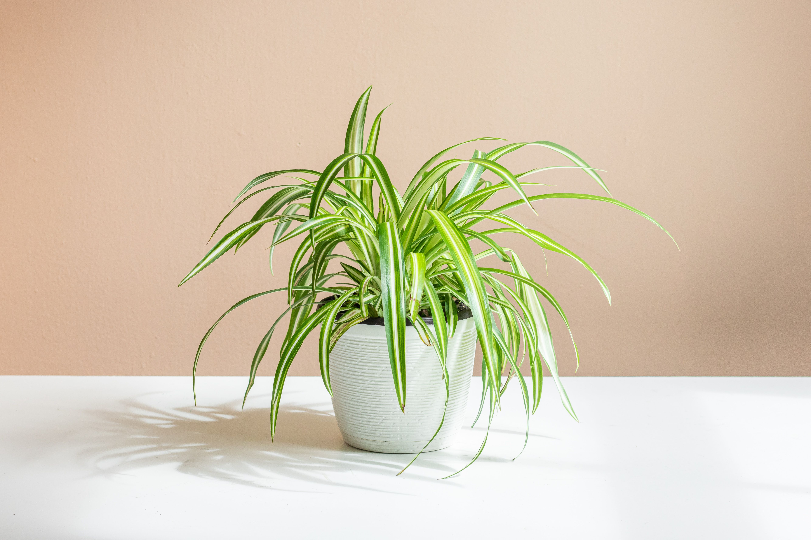

The Spider Plant is a classic beginner-friendly plant that produces baby “pups”.
Medium to bright indirect light is ideal.
Water weekly. Avoid overwatering.
Grows well at 15–28°C.
Repot yearly; plant produces baby spiderettes you can propagate.